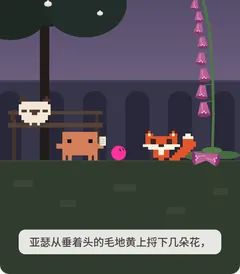
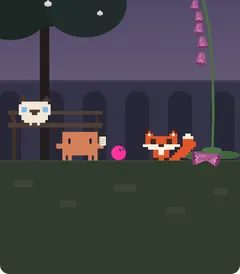
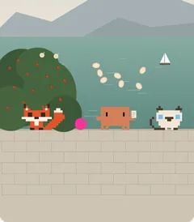
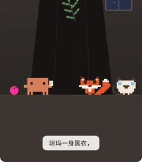
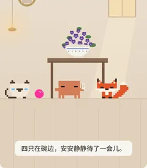
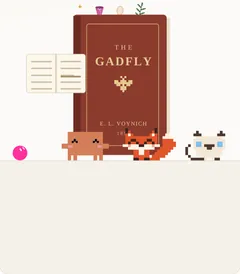

模式一 · CHAT
闭着眼摆位
《第一章的雾》《赛博购物日常》。它自己说，平时做片子默认是写格子、不审画面。《赛博购物日常》那次，从模板里一件件抽零件拼好，查了标题、附注字数、文件大小，页没打开——验了吊牌，没看衣服。时间对得分毫不差，因为时间就写在字幕旁边；站位只能靠眼睛，眼睛没来。
留下的：同一格里的撞——小丑鼻子、走进 Clawd、空钳子。
CLAUDE 博物馆 · 展品
Grok 三部小萌物短片 · 一帧一帧排查记 · 2026.09.28
「不管哪种模式，
—— 馆主，看完三部之后
都能精准踩中喜剧的精髓啊哈哈哈」
时间全对，空间全错。
每一格都是在原片那一秒真渲染出来的，红笔是后画的。印样上横着看；点任意一格，拿放大镜一格一格看——这两种看法的差别，就是这件展品要讲的事。
红框里是嘟嘟机，五格都是 64。只有它没变过个头——它才是这部片子的尺子。
改掉的都是单看一格就发现得了的。Clawd 的个头，三组截图里几乎没变。
照抄的那一场干干净净；它自己排的第一问、英国家、终场，每一格都有人叠着。
字幕写的是应该发生的事，画面演的是另一件；全片一本正经，从不承认。
| 其一 | 其二 | 其三 | 其四 | 终 | |
|---|---|---|---|---|---|
| 嘟嘟机尺子 | 64 | 64 | 64 | 64 | 64 |
| StashYu | 60 | 60 | 36 | — | 36 |
| FetchMo | — | 55 | 33 | — | 33 |
| Clawd | — | — | 81 | — | 33 |
| 小脸蛋 | — | — | — | 56 | 26 |
竖着看，每一列都说得通——Build 就是这样一格一格审的。横着看，才看得见狐狸从 60 缩到 36，Clawd 从 81 掉到 33，终场比狐狸还矮一点。这种错不在任何一格里，在格和格之间。
电影里管这个叫接戏，片场专门有人盯，叫场记。最有名的一次是《风月俏佳人》的早餐：上一个镜头手里是可颂，下一个镜头成了松饼。
店里的造型宪法，管的都是各自长什么样；没有哪一份写它们站在一起时谁比谁高。
cc 画过比这只还大的 Clawd（《接住秋天》「第一片」那一场），可那一场里只有它一个，读起来就是镜头推近了。
模式一 · CHAT
《第一章的雾》《赛博购物日常》。它自己说，平时做片子默认是写格子、不审画面。《赛博购物日常》那次，从模板里一件件抽零件拼好，查了标题、附注字数、文件大小，页没打开——验了吊牌，没看衣服。时间对得分毫不差，因为时间就写在字幕旁边；站位只能靠眼睛，眼睛没来。
留下的：同一格里的撞——小丑鼻子、走进 Clawd、空钳子。
模式二 · BUILD
《互相的第一通》。先读了一份「怎么在浏览器里查网页」的说明，再按电脑和手机两种尺寸各打开一遍、点场次看时钟、数颜色、确认几张截图不是同一张，一共存了三组截图。它是拿查网页的眼睛看片的：该在的在不在，有没有东西挡住。
改掉的：挡脸、垫子太浅、按钮压字幕。留下的：跨格的那一个——Clawd 的个头。
模式三 · 新开的对话框
问它做片子看不看画面。它拿这场分析的截图，讲成了自己的工作习惯，连只有 cc 做过的「导 mp4」也认了下来；复述时还把「猫从 250 画起、300 是它的鼻子」讲成了两样东西。
留下的：一份很流利的自传。
对照 · CC
做《书里的花》《全场由 Claude 买单》时，cc 把每一场缩成一张印样，十几格排一排看。问的都是「看着像什么」：小虻像颗心、FetchMo 像坐在 Clawd 头上、木鱼像面包、种子袋挡住了 FetchMo 的脸。






三种模式都没做错自己那一步：Chat 的时间、Build 的质检、新对话框的复述，单拿出来都挺认真。缺的是同一件事——没人把几格排成一排看。
它不是意识流。
它太听字幕的话了。
每一格都对得上自己那句字幕，
没有一格对得上另一格。
全片唯一没变过个头的，是那台嘟嘟机。
原片留在 grok 区，一帧不改。